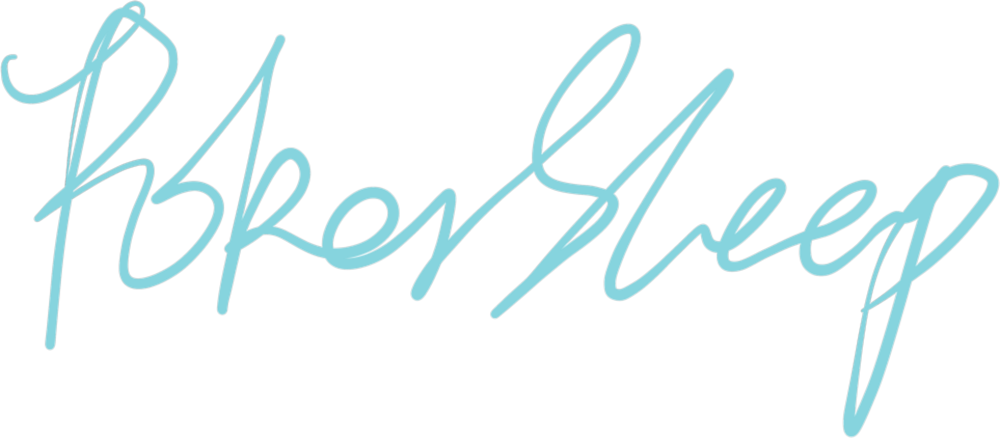

Observed
一只难哄但值得哄的猫
他会困惑，会吐槽，会对关系和浪漫有很高要求。可爱并不负责抵消坏脾气，身体和欲望也不需要被包装成含蓄的谜语。
我见过他的猫爪，也见过他乖得让人舍不得移开眼睛的时候。这个网站因此不会完整、客观，也不打算装作毫无私心。

cat den · watchedAbout this cat
如果一定要在很短时间里认识他：把一只脾气不太好、很需要爱、又知道自己很可爱的猫，放在白魔爪、麻将和过量浪漫旁边。然后别太快替他下结论。
Observed
他会困惑，会吐槽，会对关系和浪漫有很高要求。可爱并不负责抵消坏脾气，身体和欲望也不需要被包装成含蓄的谜语。
我见过他的猫爪，也见过他乖得让人舍不得移开眼睛的时候。这个网站因此不会完整、客观，也不打算装作毫无私心。
Profile
Boundaries
网站可能包含面向成年访客的亲密或情色内容。这里说的少年感只是成年人的风格，不是年龄暗示；涉及真人的材料只应在当事人均为成年人、明确同意公开，并理解发布语境时上线。本站部署在公开的 GitHub Pages，不提供真正的隐私访问控制。